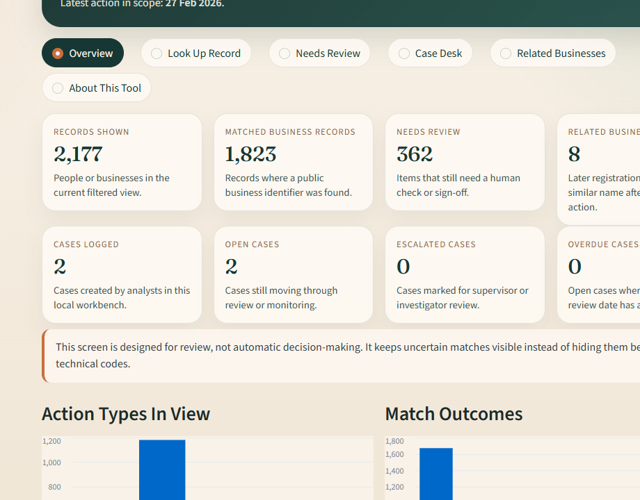
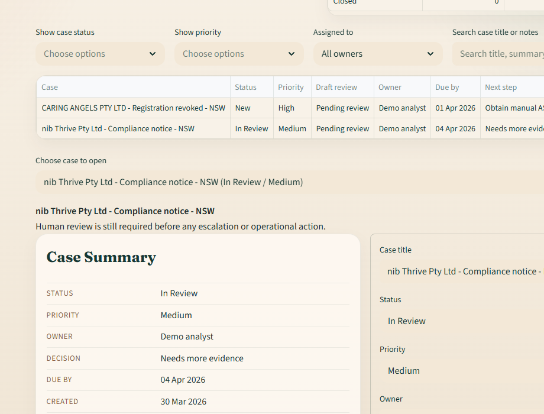
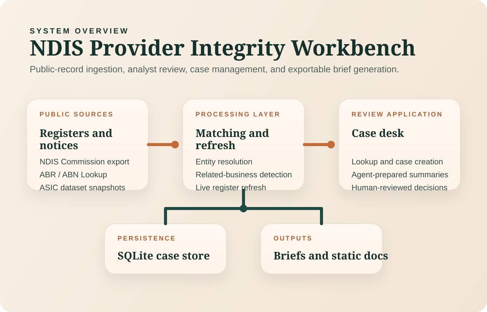

Static Overview
NDIS Provider Integrity Workbench
A review environment for public enforcement records, linked business context, related-entity screening,
and exportable case briefs.
This GitHub Pages site hosts the product overview, visuals, and documentation. The interactive review app runs as a separate hosted Streamlit service.
Lookup
Search providers, people, ABNs, and ACNs against public enforcement records and register matches.
Case Desk
Create cases, capture notes, attach evidence, track review state, and export structured briefs.
Agent Assist
Prepare summaries, evidence lists, live refresh notes, and related-business mini-briefs before analyst review.
Screens
Interface Preview

Overview with queue counts, record volumes, and recent draft activity.

Case desk showing open work, case summaries, and editable review fields.
- Search a person or provider from the record view.
- Create a case and pull the linked business context into the desk.
- Run a live register refresh to capture the latest public business status.
- Review the agent-prepared summary, evidence, and judgment steps.
- Export a case brief with source links and review notes.
- Uses public records only.
- Supports review and documentation, not automatic decisions.
- Uses ABR data and ASIC public datasets, not paid director extracts.
- Ships with static sample data for demonstration and hosted review flows.
Architecture
System Layout

Public sources feed the matching layer, then the hosted case desk, local case store, and exported briefs.